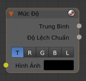

Nút Mức Độ -- Levels Node¶

Nút Mức Độ.
Nút Mức Độ đọc các kênh màu của đầu vào và đưa ra các giá trị phân tích.
Các Đầu Vào -- Inputs¶
- Hình Ảnh -- Image
- Hình ảnh cung cấp tiêu chuẩn.
Các Tính Chất -- Properties¶
- Kênh -- Channel
- T (RGB Tổng hợp -- Combined RGB), R (Đỏ -- Red), G (Lục -- Green), B (Lam -- Blue), L (Độ Sáng -- Luminance)
Các Đầu Ra -- Outputs¶
Các giá trị 1D (1 chiều, thay vì 3 chiều) dựa trên mức độ của hình ảnh.
- Trung Bình -- Mean
- Giá trị trung bình của tất cả các điểm ảnh (pixel) của hình ảnh trong kênh được chỉ định (tổng hợp (cả 3), đỏ, lục, lam, độ sáng). Nó cho bạn biết hình ảnh tối hoặc sáng bao nhiêu và có được sử dụng trong những trường hợp mà các sắp đặt phụ thuộc vào độ "sáng chói (bright)" hoặc độ "tối (dark)".
- Độ Lệch Chuẩn -- Standard deviation
- Các giá trị điểm ảnh ấy khác với giá trị trung bình là bao nhiêu. Độ lệch chuẩn thấp cho biết giá trị điểm ảnh có xu hướng rất gần với giá trị trung bình. Độ lệch chuẩn cao chỉ ra rằng các giá trị được trải rộng trên một phạm vi lớn các giá trị.
Sự hình dung các dữ liệu như vậy chỉ là một hình chữ nhật màu xám.